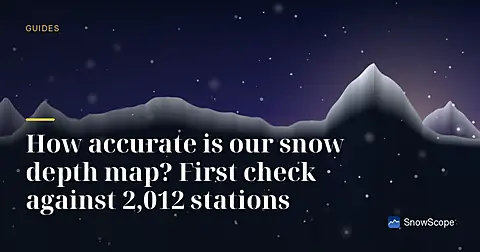

Is there snow in Montenegro? Snow depth and new snow on 17 November 2026
The white area in Montenegro stands at about 20 km² today, 60 km² lost since yesterday.
See the live snow forecast for Ski centar Savin kuk in the SnowScope appSnow depth, powder alerts and the 3D map, free.
How much of the country is white
Below about 2,200 m the slopes are mostly green or brown. Seven days ago the figure was 280 km², 260 km² more than now.
| Resort | Snow depth | New snow, 72 h | Coming, next days | Top |
|---|---|---|---|---|
| Ski centar Savin kuk | 15 cm | 10 cm | 5 cm | 2,175 m |

Fresh snow
The last three days were dry or nearly so, with no more than 0 cm anywhere.
On the ground
The snow is retreating uphill, so plan on the higher lifts and avoid the low valley runs.
With more snow in the forecast, the next days should improve things further.
Low, middle and high ground
Climb and the snow gets deeper: 2,000-2,500 m: on average 1 cm (15 % of the ground white).
The next days
The week ahead could bring up to 15 cm, 1 cm of it in the next three days.
Monday 23 November stands out, with up to 9 cm in a day.
Where to ski first
The deepest snow of the country's resorts is at Ski centar Savin kuk: 15 cm.
Ski centar Savin kuk picked up 10 cm in the last three days and could add 5 cm by Friday 20 November.
Snow lies on the upper slopes of 1 out of 3 resorts in Montenegro.
Tips for skiers
- Check the resort's own lift status before you travel.
- Early-season snow is thin over rocks: ski the groomed runs first.
- Snow above the tree line can be wind-packed: watch the ridges.
About these numbers
Resort snow depths are the deepest snow on the resort's upper slopes on the date shown; they are estimates for an area, not a measurement at one point. Forecasts can change. Always read the official avalanche bulletin before going off-piste.
Cite this report
For research, teaching or the press: the numbers and charts are free to reuse under CC BY 4.0 with this citation.
SnowScope (2026), Is there snow in Montenegro? Snow depth and new snow on 17 November 2026, https://snowscope.app/blog/en/2026/11/montenegro-snow-report-17-november-2026.html, accessed 2026-11-17
SnowScope (Atlas Labs). (2026, November 17). Is there snow in Montenegro? Snow depth and new snow on 17 November 2026. SnowScope snow reports. https://snowscope.app/blog/en/2026/11/montenegro-snow-report-17-november-2026.html
BibTeX
@misc{snowscope2026montenegrosnowreport17no,
author = {{SnowScope (Atlas Labs)}},
title = {Is there snow in Montenegro? Snow depth and new snow on 17 November 2026},
year = {2026},
month = nov,
howpublished = {\url{https://snowscope.app/blog/en/2026/11/montenegro-snow-report-17-november-2026.html}},
note = {Published 2026-11-17 13:54 UTC; accessed 2026-11-17}
}· CC BY 4.0 · Methods, data and tools →
Ski centar Savin kuk: snow and temperature by height, this winter vs last (tools) →
Follow Ski centar Savin kuk
Free: a message when fresh snow is coming, and the forecast every morning.
More snow reports

December snow odds from 46 winters and checked day prices: Ski Cooper $49, Les 3 Vallées €75.70, Oukaïmeden no official tariff. Where a cheap December ski day works.

We compared the SnowScope snow depth map with 2,012 measuring stations: RMSE 7.7 cm, bias -0.5 cm, snow or no snow right 88 % of the time. What works, what doesn't yet, and what we improve next.

Orelle holds 42 cm, close to the typical 53 cm for mid-November. Fresh snow forecast across the Alps over the next three days.